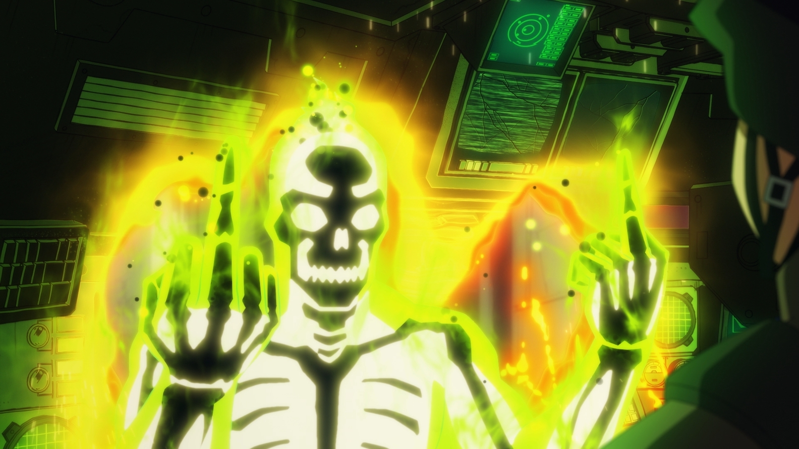
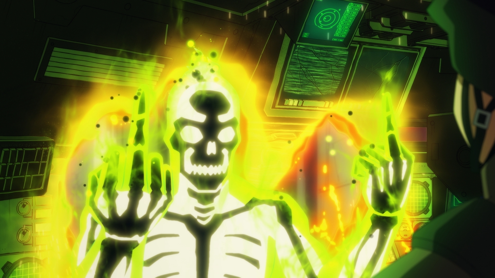
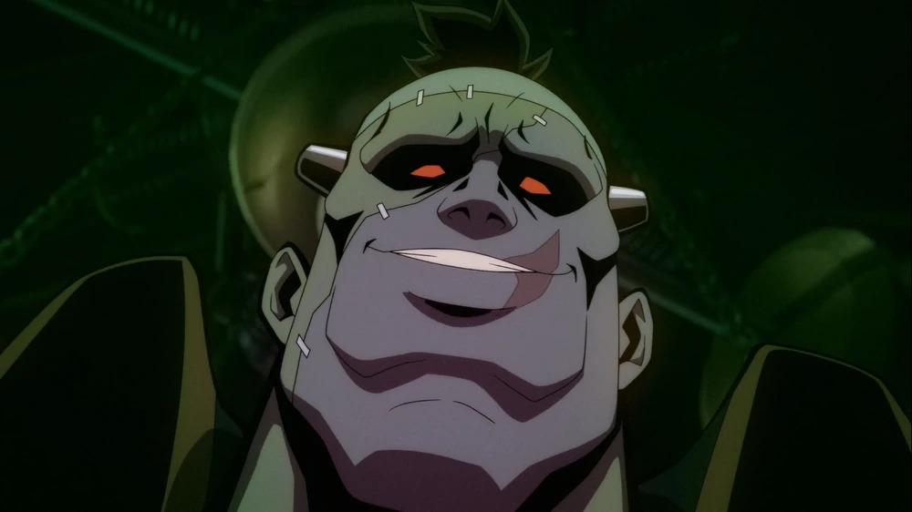
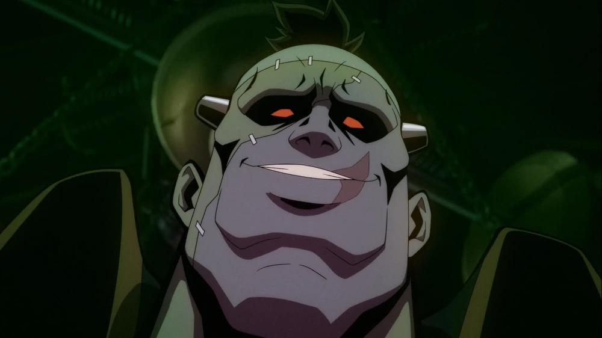

Elenco y sus personajes
Indira Varma Como The Bride
The bride en la serie funciona como lider secundario del equipo, ademas de ser luchadora feroz con un pasado lleno de traiciones y conflictos emocionales, especialmente con Frankenstein.
Frank Grillo haciendo la voz de Rick Flag
Líder del equipo y padre de Rick Flag Jr. Es un veterano militar con una moral compleja.

Zoë Chao como Nina Mazursky
Un experimento, adaptándose a su nueva vida como criatura anfibia.
Sean Gunn como G.I. Robot y Weasel
Robot es un androide militar que luchó en la Segunda Guerra Mundial. Weasel es un metahumano con aspecto de comadreja, conocido por su comportamiento errático.
Alan Tudyk como Doctor Phosphorus
Un científico convertido en señor del crimen, con un cuerpo permanentemente radiactivo.
 

David Harbour como Eric Frankenstein
La interpreteacion del monstruo clásico por parte de DC, con un pasado trágico y una relación complicada con The Bride.
 
